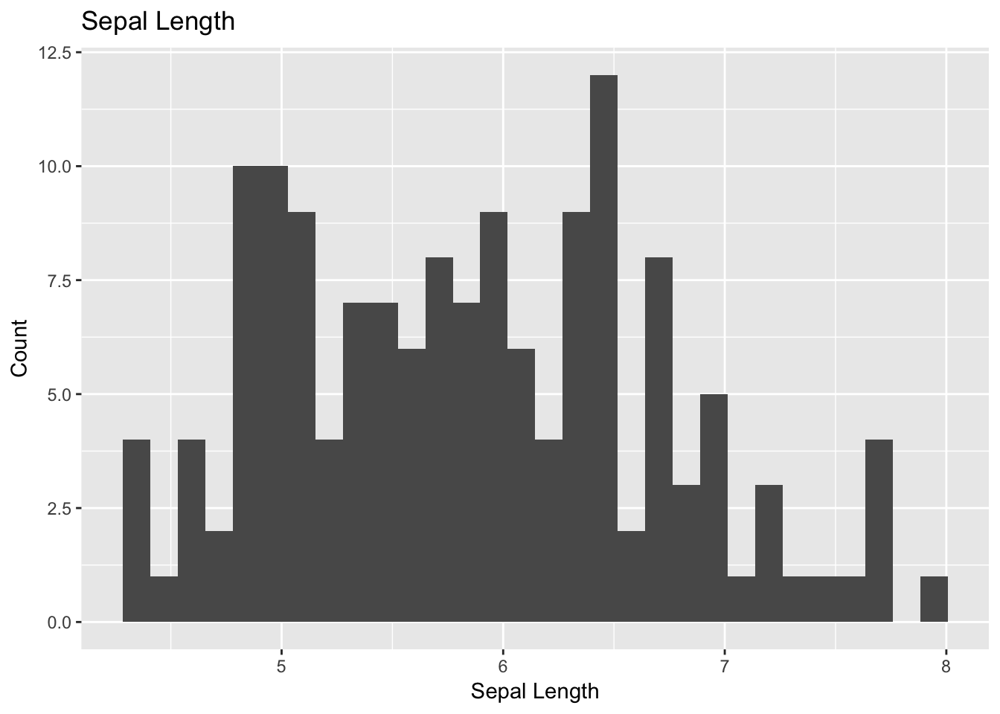
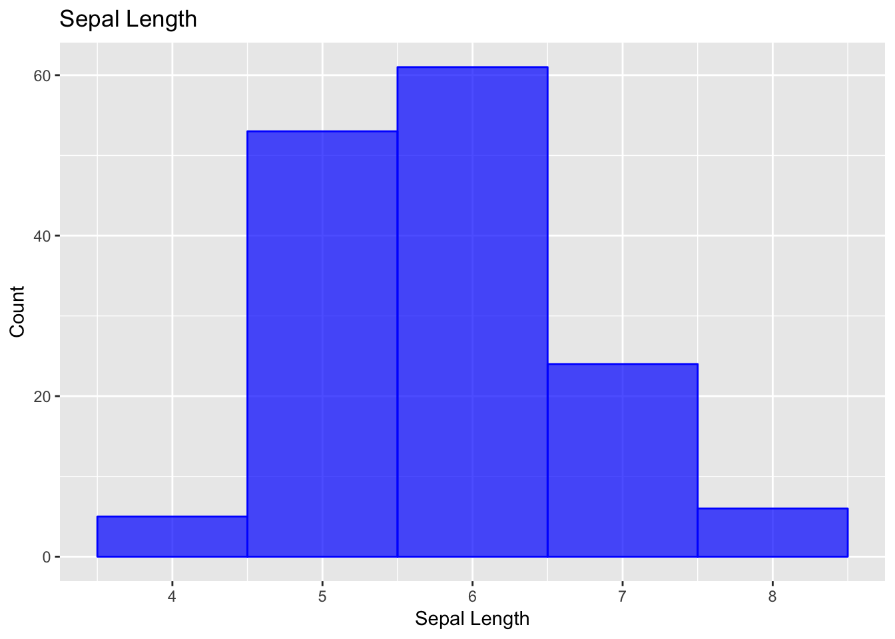
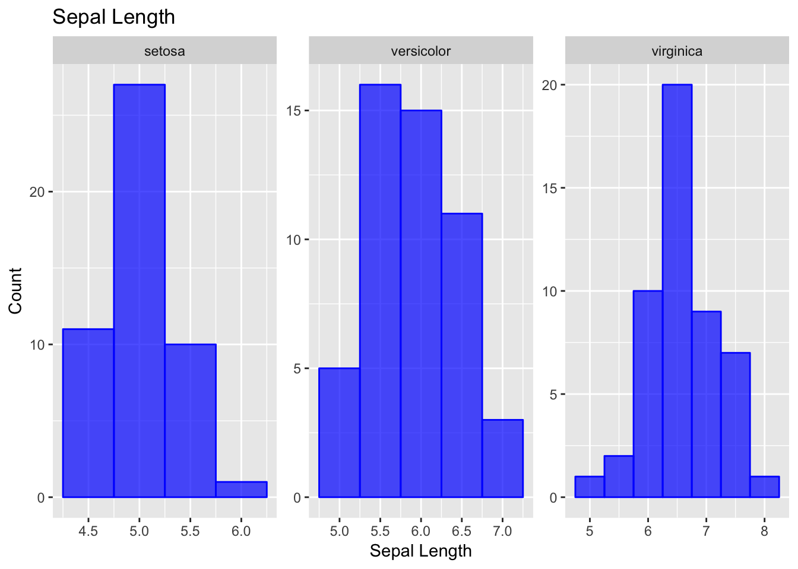
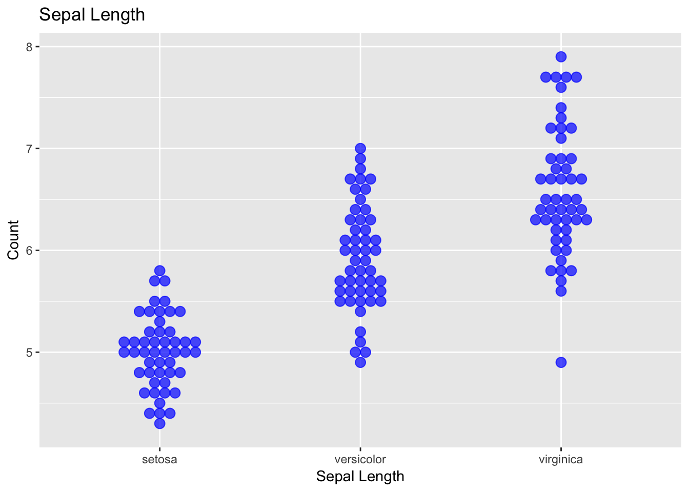
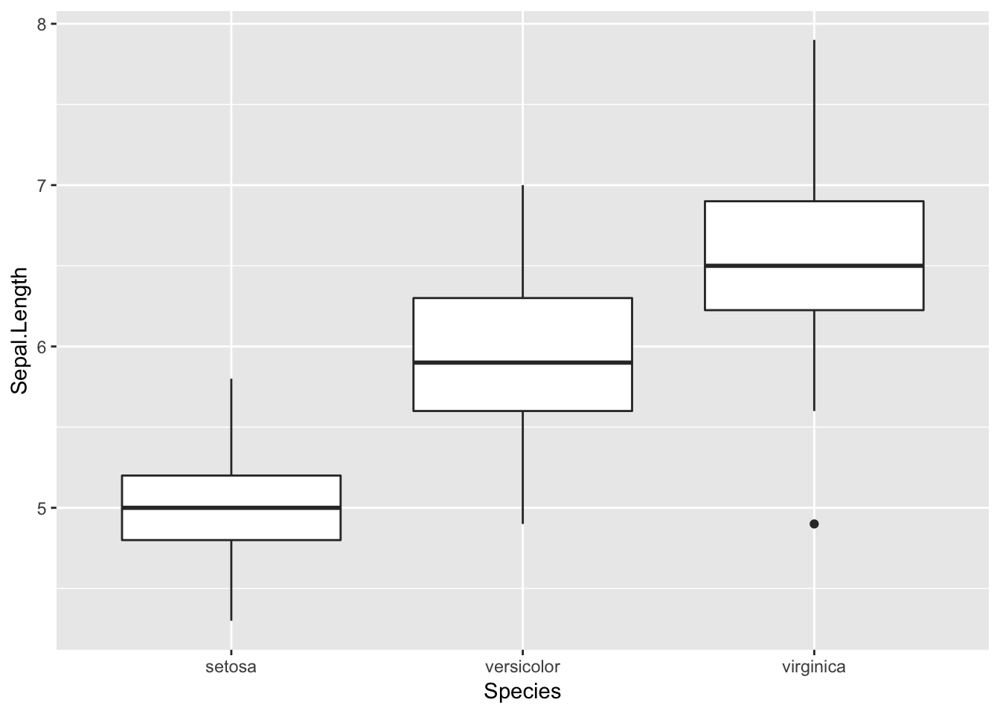
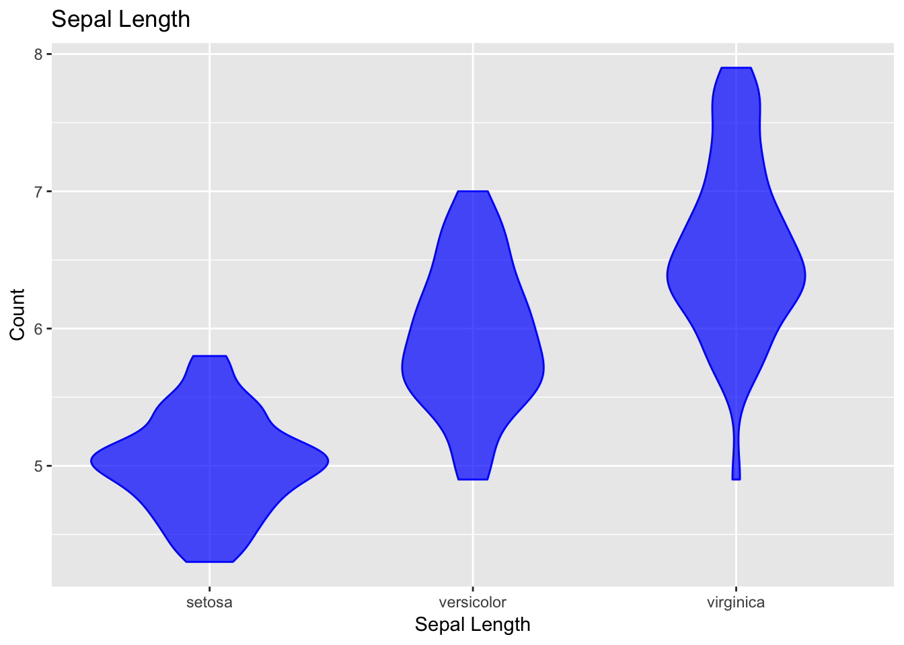
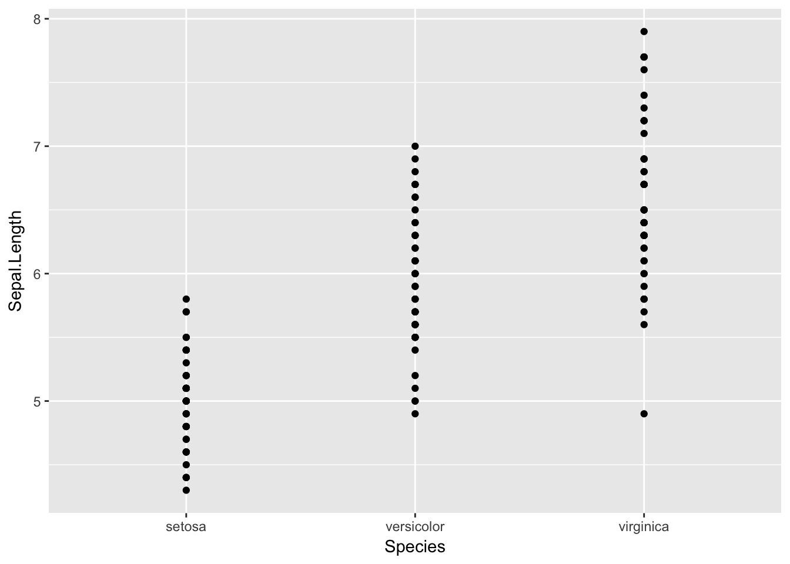
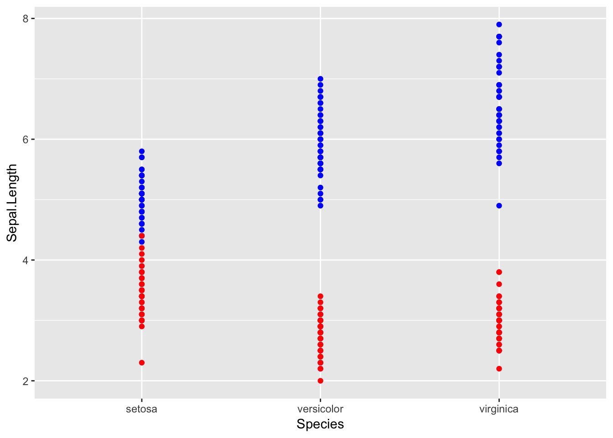
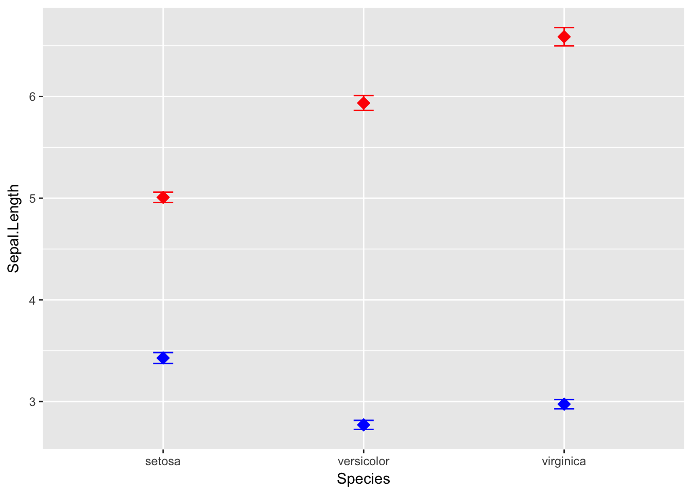
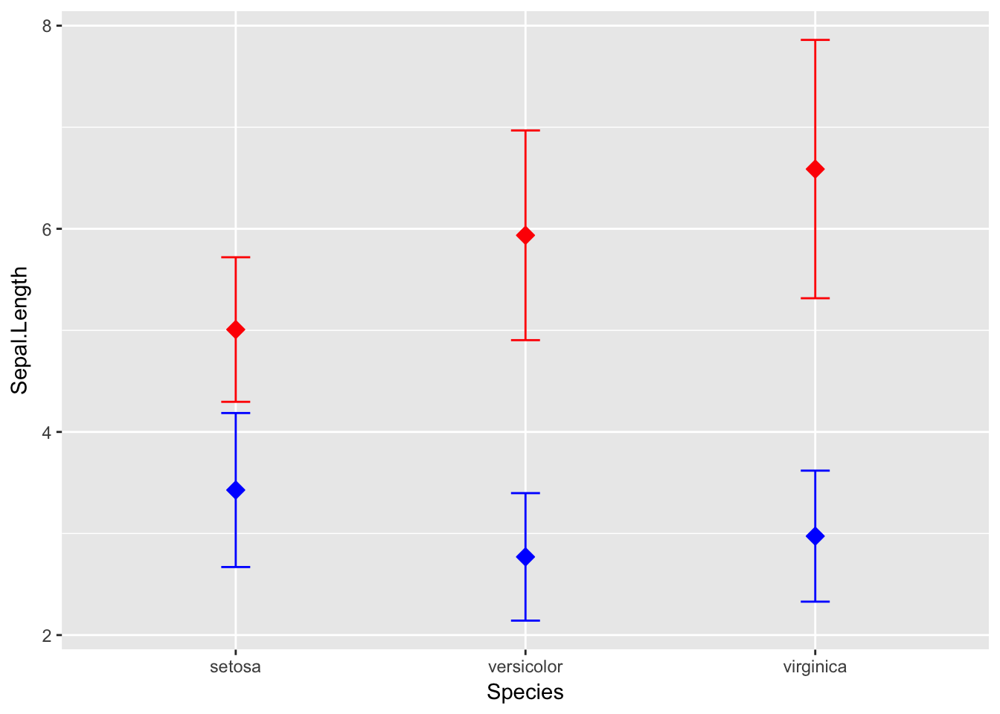

# One new package for summary stats
#install.packages("psych")
# load the libraries each time you restart R
library(tidyverse)
library(lubridate)
library(scales)
library(skimr)
# read in the file
iris.df <- read_csv("data/iris.csv")
glimpse(iris.df)## Observations: 150
## Variables: 5
## $ Sepal.Length <dbl> 5.1, NA, 4.7, 4.6, 5.0, 5.4, 4.6, 5.0, 4.4, 4.9, ...
## $ Sepal.Width <dbl> 3.5, 3.0, 3.2, 3.1, 3.6, 3.9, 3.4, 3.4, 2.9, 3.1,...
## $ Petal.Length <dbl> 1.4, 1.4, 1.3, 1.5, 1.4, 1.7, 1.4, 1.5, 1.4, 1.5,...
## $ Petal.Width <dbl> 0.2, 0.2, 0.2, 0.2, 0.2, 0.4, 0.3, 0.2, 0.2, 0.1,...
## $ Species <chr> "setosa", "setosa", "setosa", "setosa", "setosa",...#Hitograms with GGPLOT
ggplot(data=iris.df, aes(iris.df$Sepal.Length)) +
geom_histogram() +
labs (title="Sepal Length", x="Sepal Length", y="Count")## `stat_bin()` using `bins = 30`. Pick better value with `binwidth`.## Warning: Removed 1 rows containing non-finite values (stat_bin).
#Hitograms with GGPLOT
ggplot(data=iris.df, aes(iris.df$Sepal.Length)) +
geom_histogram(col="blue", fill="blue", alpha=.7, binwidth = 1) +
labs (title="Sepal Length", x="Sepal Length", y="Count")## Warning: Removed 1 rows containing non-finite values (stat_bin).
###What if you want to look at all of the species separately
ggplot(data=iris.df, aes(iris.df$Sepal.Length)) +
geom_histogram(binwidth = .5, col="blue", fill="blue", alpha=.7) +
labs (title="Sepal Length", x="Sepal Length", y="Count") +
facet_wrap(~Species, scales = "free") # allows the scales to be free and you can comment this out to see what happens## Warning: Removed 1 rows containing non-finite values (stat_bin).ggplot(data=iris.df, aes(x= Species, y=Sepal.Length)) +
geom_dotplot(binwidth=0.1, col="blue", fill="blue", alpha=.7, stackdir = "center", binaxis = "y") +
labs (title="Sepal Length", x="Sepal Length", y="Count") ## Warning: Removed 1 rows containing non-finite values (stat_bindot).# Box and Whisker plots with limits ####
ggplot(iris.df, aes(x = Species, y = Sepal.Length))+
geom_boxplot() ## Warning: Removed 1 rows containing non-finite values (stat_boxplot).
ggplot(data=iris.df, aes(x= Species, y=Sepal.Length)) +
geom_violin(col="blue", fill="blue", alpha=.7, stackdir = "center", binaxis = "y") +
labs (title="Sepal Length")+
labs (x="Sepal Length", y="Count") ## Warning: Ignoring unknown parameters: stackdir, binaxis## Warning: Removed 1 rows containing non-finite values (stat_ydensity).
violin.plot <- ggplot(data=iris.df, aes(x= Species, y=Sepal.Length)) +
geom_violin(col="blue", fill="blue", alpha=.7) +
labs (title="Sepal Length")+
labs (x="Sepal Length", y="Count")
violin.plot## Warning: Removed 1 rows containing non-finite values (stat_ydensity).
#Save the file with sizes
ggsave("figures/violin.plot.tiff",plot=violin.plot, width=6, height=6, dpi = 300)## Warning: Removed 1 rows containing non-finite values (stat_ydensity).So now lets try to do a few plots that are useful for publication. the first will be a mean and standard error plot and we will try this with mutliple data in wide format
First lets just plot Species verus Sepal Length.
ggplot(iris.df, aes(x=Species)) +
geom_point(aes(y=Sepal.Length))## Warning: Removed 1 rows containing missing values (geom_point).Now lets add Sepal.Width
ggplot(iris.df, aes(x=Species)) +
geom_point(aes(y=Sepal.Length), color="blue") +
geom_point(aes(y=Sepal.Width), color="red")## Warning: Removed 1 rows containing missing values (geom_point).
Now what if you wanted only to show the means
ggplot(iris.df, aes(x=Species))+
stat_summary(aes(y=Sepal.Length), fun.y=mean, geom='point', shape=23, size=3, color="red", fill="red") ## Warning: Removed 1 rows containing non-finite values (stat_summary).
Add in the second mean Now what if you wanted only to show the means
ggplot(iris.df, aes(x=Species))+
stat_summary(aes(y=Sepal.Length), fun.y=mean, geom='point', shape=23, size=3, color="red", fill="red") +
stat_summary(aes(y=Sepal.Width), fun.y=mean, geom='point', shape=23, size=3, color="red", fill="blue") ## Warning: Removed 1 rows containing non-finite values (stat_summary).
Now your boss of course wants standard error bars on each mean… no problem
ggplot(iris.df, aes(x=Species))+
stat_summary(aes(y=Sepal.Length), fun.y=mean, geom='point', shape=23, size=3, color="red", fill="red") +
stat_summary(aes(y=Sepal.Width), fun.y=mean, geom='point', shape=23, size=3, color="blue", fill="blue") +
stat_summary(aes(y=Sepal.Length), fun.data = mean_se, geom = "errorbar", color="red", width=.1) +
stat_summary(aes(y=Sepal.Width),fun.data = mean_se, geom = "errorbar", color="blue", width=.1) ## Warning: Removed 1 rows containing non-finite values (stat_summary).
## Warning: Removed 1 rows containing non-finite values (stat_summary).
you could also do standard deviation
ggplot(iris.df, aes(x=Species))+
stat_summary(aes(y=Sepal.Length), fun.y=mean, geom='point', shape=23, size=3, color="red", fill="red") +
stat_summary(aes(y=Sepal.Width), fun.y=mean, geom='point', shape=23, size=3, color="blue", fill="blue") +
stat_summary(aes(y=Sepal.Length), fun.data = mean_sdl, geom = "errorbar", color="red", width=.1) +
stat_summary(aes(y=Sepal.Width),fun.data = mean_sdl, geom = "errorbar", color="blue", width=.1) ## Warning: Removed 1 rows containing non-finite values (stat_summary).
## Warning: Removed 1 rows containing non-finite values (stat_summary).
Now you boss says great but the error bars overlap… can you fix this?
ggplot(iris.df, aes(x=Species))+
stat_summary(aes(y=Sepal.Length), fun.y=mean, geom='point', shape=23, size=3, color="red",
fill="red", position=position_nudge(x = 0.12, y = 0)) +
stat_summary(aes(y=Sepal.Width), fun.y=mean, geom='point', shape=23, size=3, color="blue",
fill="blue") +
stat_summary(aes(y=Sepal.Length), fun.data = mean_sdl, geom = "errorbar", color="red", width=0.1,
position=position_nudge(x = 0.12, y = 0)) +
stat_summary(aes(y=Sepal.Width),fun.data = mean_sdl, geom = "errorbar", color="blue", width=0.1) ## Warning: Removed 1 rows containing non-finite values (stat_summary).
## Warning: Removed 1 rows containing non-finite values (stat_summary).